#se agrega las librerías que se usaránlibrary(readr)library(tidyverse)
── Attaching core tidyverse packages ──────────────────────── tidyverse 2.0.0 ──
✔ dplyr 1.1.4 ✔ purrr 1.1.0
✔ forcats 1.0.0 ✔ stringr 1.5.1
✔ ggplot2 3.5.2 ✔ tibble 3.3.0
✔ lubridate 1.9.4 ✔ tidyr 1.3.1
── Conflicts ────────────────────────────────────────── tidyverse_conflicts() ──
✖ dplyr::filter() masks stats::filter()
✖ dplyr::lag() masks stats::lag()
ℹ Use the conflicted package (<http://conflicted.r-lib.org/>) to force all conflicts to become errors
library(ggplot2)
#Carga la base de datos
#se carga el archivo excel y se pone que el salario es una variable de tipo character para que aparezca la coma de los salariosmoras <-read_csv("C:/Users/aless/OneDrive/Escritorio/Cursos de computación/Herramientas de Datos I/Examen virtual 2/moras.txt", col_types =cols(SALARIO =col_character()))#se usa la funcion gsub para cambiar la coma por un punto y despues se pone la columna que se quiere cambiarmoras$SALARIO <-gsub(",", ".", moras$SALARIO)#se cambia el tipo de variable de la columna a una de tipo numéricomoras$SALARIO <-as.numeric(moras$SALARIO)view(moras)
#Resumen 5 números
#se crea resumen donde se calculara las 5 variables usando summary y select para que resuma solamente las variables que se deseen.resumen <- moras %>%select(c(SALARIO, EDAD)) %>%summary()resumen
SALARIO EDAD
Min. : 10 Min. :14.00
1st Qu.: 297429 1st Qu.:31.00
Median : 408495 Median :40.00
Mean : 657534 Mean :41.91
3rd Qu.: 700000 3rd Qu.:52.00
Max. :16858742 Max. :99.00
NA's :3 NA's :3
#Z-score
#con mutate se creara las dos columnas con los valores atípicos haciendo uso de funciones como mean y sd para calcular la desviación estandar, también se usará la funcion abs para sacar el valor absoluto del resultado del z-score.#note que en R los valores faltantes no son 0 en como en excel son NA, por lo que al calcular su z-score seguirán siendo NAmoras <- moras %>%mutate(z_salario =(moras$SALARIO-mean(moras$SALARIO, na.rm =TRUE))/sd(moras$SALARIO, na.rm =TRUE),z_edad =(moras$EDAD-mean(moras$EDAD, na.rm =TRUE))/sd(moras$EDAD, na.rm =TRUE) )#ahora con esas variables ya creadas se crearan las variables para verificiar si son mayores o menores a 1,96 que retornará un true o falsemoras <- moras %>%mutate(atipico_salario=(abs(z_salario) >1.96),atipico_edad=(abs(z_edad) >1.96) )view(moras)
#Porcentaje valores faltantes
#con col sums y is.na se calculara los na por columnas que hay en todas las columnas y adimas se divide por la cantidad de filas que hay y se multiplica por 100 para que quede en porcentajecolSums(is.na(moras))/nrow(moras)*100
#se usa la funcion mean y is.na para imputar por la media los valores faltantes de la columna edad y salariomoras$SALARIO[is.na(moras$SALARIO)] <-mean(moras$SALARIO, na.rm =TRUE)moras$EDAD[is.na(moras$EDAD)] <-mean(moras$EDAD, na.rm =TRUE)#se calcula la moda de los tipos de aseguramientosmoda <-function(x) {#crear una tabla donde nos diga la cantidad de veces que aparece cada tipo de aseguramiento tabla <-table(x)#encontrar la frecuencia máxima de cata tipo de aseguramiento freq_max <-max(tabla)#devuelve el tipo de aseguramiento con más repeticiones, donde lo que hace es crear un vector lógico que devuelve cuál de los diferentes tipos de aseguramiento es el que tiene más frecuencia. moda_valor <-names(tabla)[tabla == freq_max]#si hay varias modas, devuelve la primera que se ecnontróreturn(moda_valor[1])}#se crea la variable moda_tipo donde se utiliza la funcion creada anteriormente y se pone de criterio la columna tipo aseguramiento para poder calcular la moda#después lo que se hace es con is.na se dice que los valores faltantes en esta columna se van a reemplazar con la moda que se encontró en la línea de arribamoda_tipo <-moda(moras$TIPO_ASEGURAMIENTO)moras$TIPO_ASEGURAMIENTO[is.na(moras$TIPO_ASEGURAMIENTO)] <- moda_tipoview(moras)
#Gráficos cantidad de individuos por categoría
#se usa la estructura básica para crear todos los gráficos segun el individuo, la base de datos, ggplot con el aes, despues se escoge el tipo de gráfico que en este caso sera uno de barras, se escribe el titulo, el nombre de los ejes y el theme minimal para que se vea mejor.#también en el caso de tipos de aseguramiento se usa str_wrap para que el nombre no quede tan largo y se pueda dividir, donde se pone que sea 15 para que el largo no sobre pase ese número y coord flip para que no se vea recargado abajo.moras %>%ggplot(aes(x =str_wrap(TIPO_ASEGURAMIENTO, 15))) +geom_bar(fill ="steelblue") +labs(title ="Cantidad de individuos por tipo de aseguramiento",x ="Categoría",y ="Cantidad de individuos" ) +theme_minimal() +coord_flip()
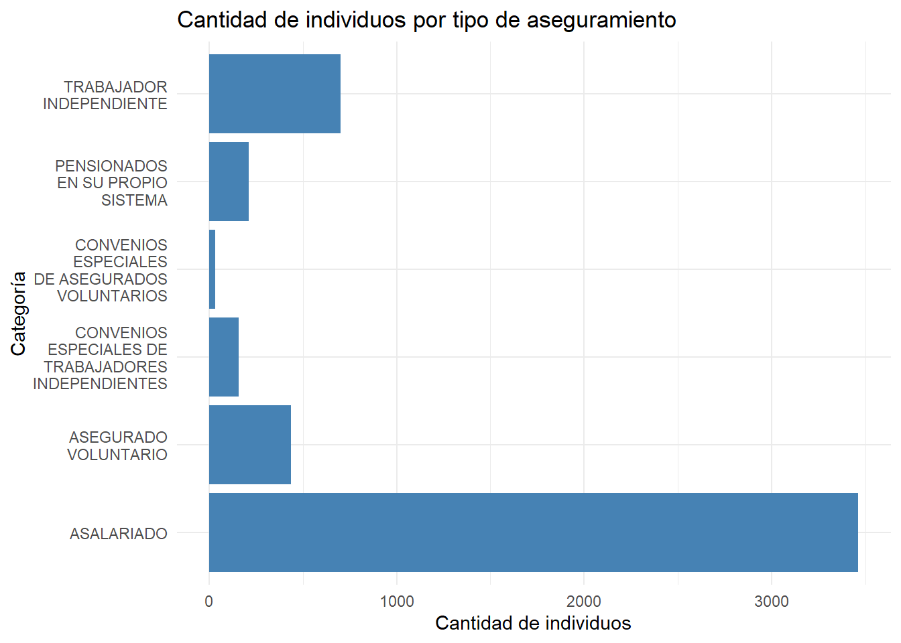
moras %>%ggplot(aes(x = SEXO)) +geom_bar(fill ="steelblue") +labs(title ="Cantidad de individuos por sexo",x ="Sexo",y ="Cantidad de individuos" ) +theme_minimal()
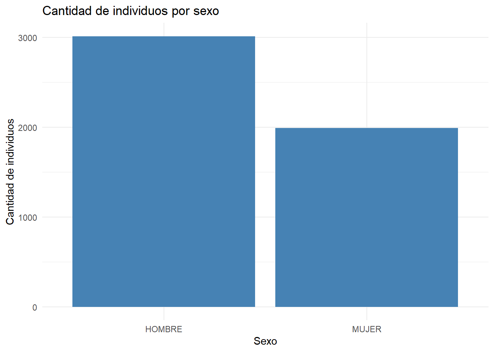
moras %>%ggplot(aes(x = SECTOR)) +geom_bar(fill ="steelblue") +labs(title ="Cantidad de individuos por sector",x ="Sector",y ="Cantidad" ) +theme_minimal()
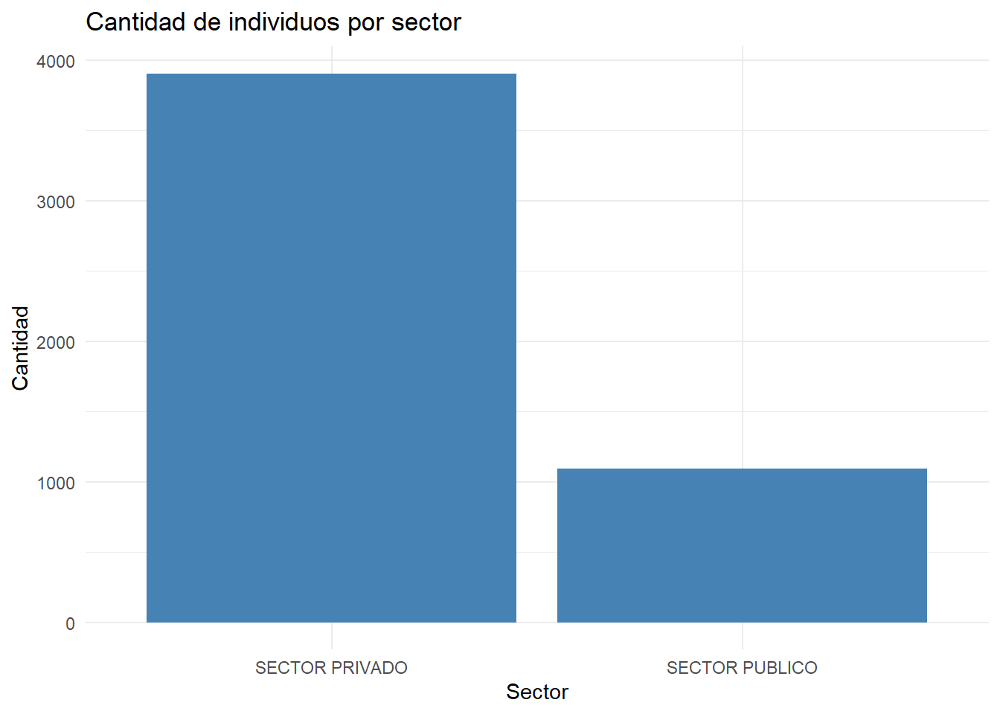
moras %>%ggplot(aes(x = INDICADOR_ACTIVO)) +geom_bar(fill ="steelblue") +labs(title="Cantidad de individuos según si tienen activado su seguro",x="¿Tiene el seguro activo?",y="Cantidad de individuos" ) +theme_minimal()
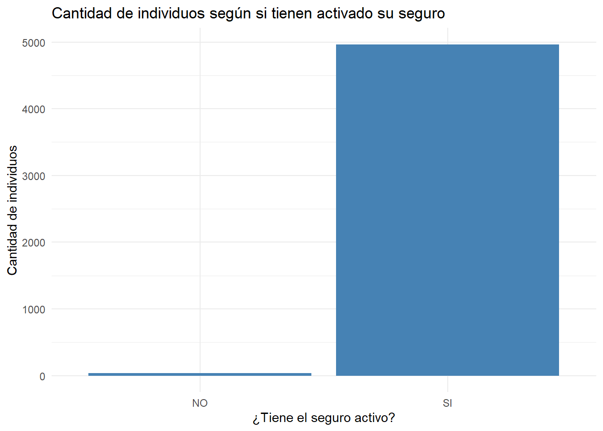
moras %>%ggplot(aes(x =INDICADOR.EXTRANJERO)) +geom_bar(fill ="steelblue") +labs(title ="Cantidad de individuos según condición de extranjero",x ="¿Es extranjero?",y ="Cantidad de individuos" ) +theme_minimal()
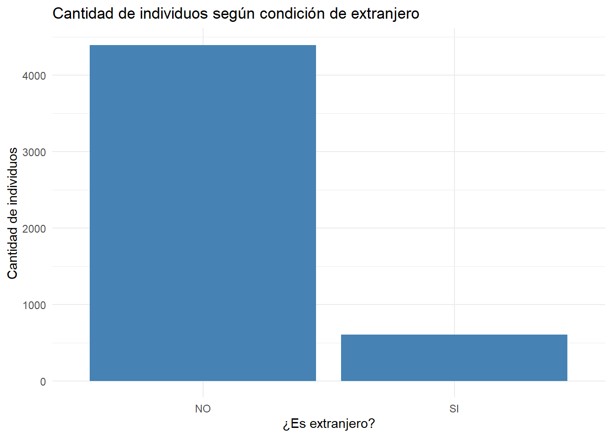
moras %>%ggplot(aes(x = INDICADOR_MOROSO)) +geom_bar(fill ="steelblue") +labs(title ="Cantidad de individuos según condición de morosidad",x ="¿Es moroso?",y ="Cantidad de individuos" ) +theme_minimal()
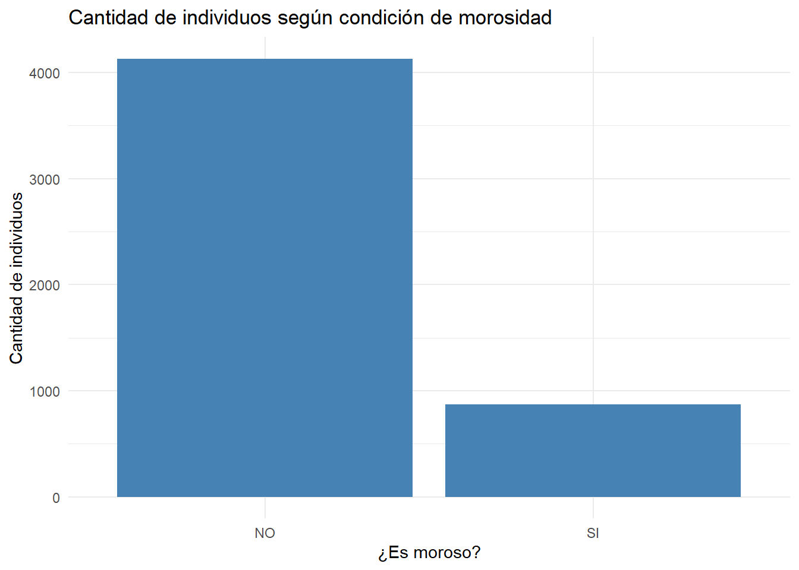
#note que son los mismo gráficos que los que se hizo en excel, por lo que sería el mismo análisis, por lo tanto no me detendré en volver a poner lo mismo.
#Gráficos morosidad según variables categóricas
#lo que se hace primero es hacer un agrupación por cada variable y con summarrise se calcula el porcentaje de morosidad que hay con mean donde solo se calcula cuando este es igual a "SI"gráfico_sexo <-moras %>%group_by(SEXO) %>%summarise(porcentaje_moroso =mean(INDICADOR_MOROSO =="SI") *100 ) %>%ggplot(aes(x = SEXO, y = porcentaje_moroso)) +geom_col(fill ="steelblue") +labs(title ="Porcentaje de morosos por sexo",x ="Sexo",y ="Porcentaje de morosos (%)" ) +theme_minimal()print(gráfico_sexo)
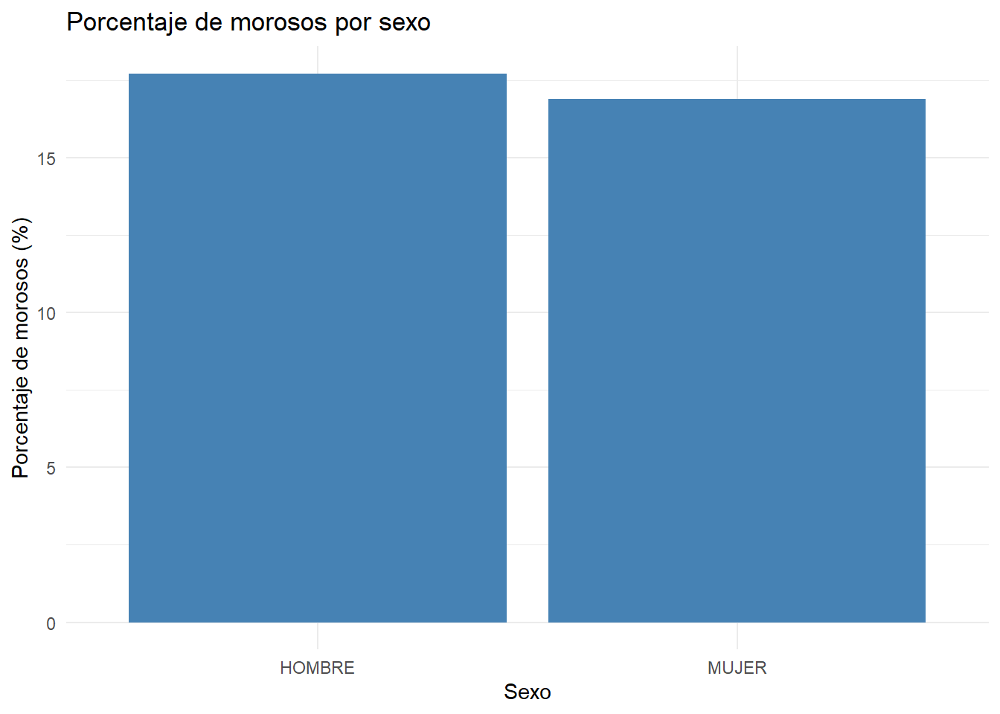
gráfico_sector <-moras %>%group_by(SECTOR) %>%summarise(porcentaje_moroso =mean(INDICADOR_MOROSO =="SI") *100 ) %>%ggplot(aes(x = SECTOR, y = porcentaje_moroso)) +geom_col(fill ="steelblue") +labs(title ="Porcentaje de morosos por sector",x ="Sector",y ="Porcentaje de morosos (%)" ) +theme_minimal()print(gráfico_sector)
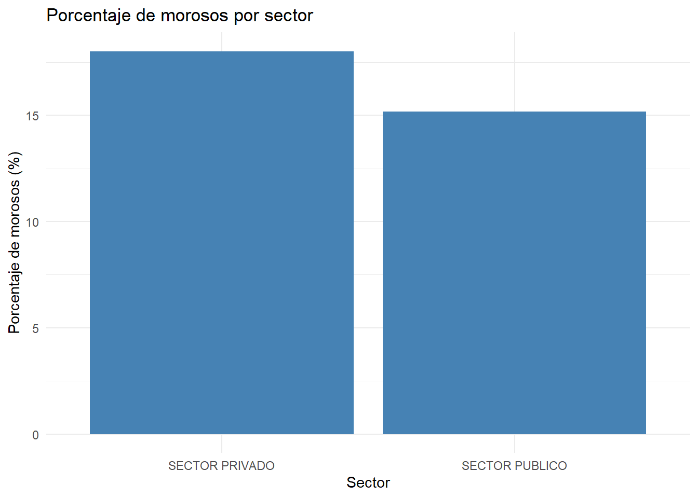
#al igual que en el gráfico de tipo de aseguramiento anterior se usa str_wrap y coord flip para que sea legible el gráficográfico_tipo_aseguramiento <-moras %>%group_by(TIPO_ASEGURAMIENTO) %>%summarise(porcentaje_moroso =mean(INDICADOR_MOROSO =="SI") *100 ) %>%ggplot(aes(x =str_wrap(TIPO_ASEGURAMIENTO, 15), y = porcentaje_moroso)) +geom_col(fill ="steelblue") +labs(title ="Porcentaje de morosos por tipo de aseguramiento",x ="TIpos de aseguramientos",y ="Porcentaje de morosos (%)" ) +theme_minimal() +coord_flip()print(gráfico_tipo_aseguramiento)
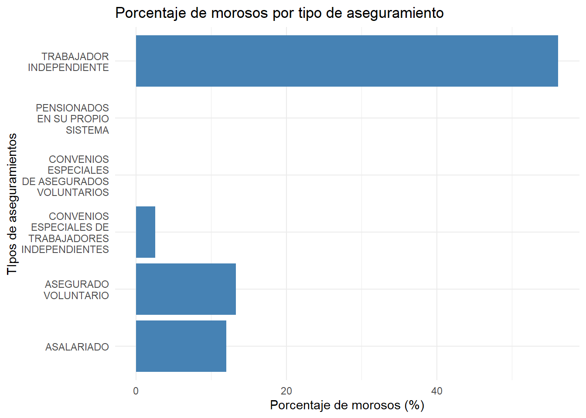
gráfico_activo <-moras %>%group_by(INDICADOR_ACTIVO) %>%summarise(porcentaje_moroso =mean(INDICADOR_MOROSO =="SI") *100 ) %>%ggplot(aes(x = INDICADOR_ACTIVO, y = porcentaje_moroso)) +geom_col(fill ="steelblue") +labs(title ="Porcentaje de morosos por si tienen activado su seguro o no",x ="¿Tienen activado su seguro?",y ="Porcentaje de morosos (%)" ) +theme_minimal()print(gráfico_activo)
gráfico_extranjero <-moras %>%group_by(INDICADOR.EXTRANJERO) %>%summarise(porcentaje_moroso =mean(INDICADOR_MOROSO =="SI") *100 ) %>%ggplot(aes(x = INDICADOR.EXTRANJERO, y = porcentaje_moroso)) +geom_col(fill ="steelblue") +labs(title ="Porcentaje de morosos por si son extranjeros o no",x ="¿Son extranjeros?",y ="Porcentaje de morosos (%)" ) +theme_minimal()print(gráfico_extranjero)
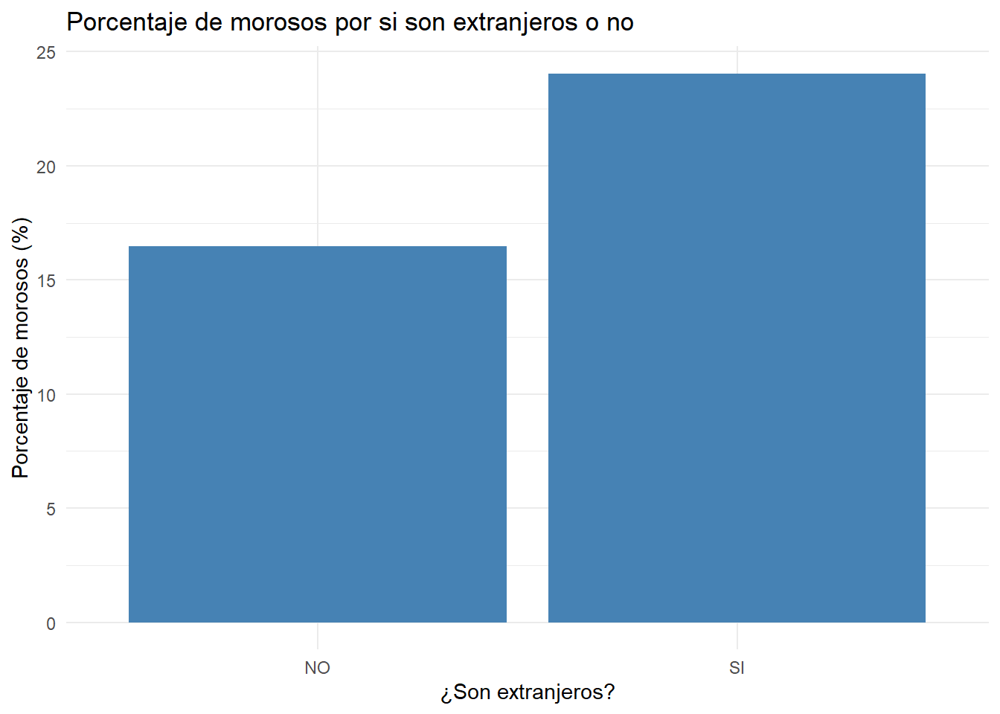
#note en este caso pasa igual, los gráficos son los mismos que en excel, por lo que se hará nuevamente el análisis
#Gráficos morosidad según numéricas
#lo que se hace es agrupar por morosidad y con summarise calcular el promedio de la edad sin tomar en cuenta los NA, despues se usa al estrcutrua general para un gráfico en ggplot 2, además se usa scale_fill_manual para poder asignar colores a si es moroso o no es morosoedad_morosidad <- moras %>%group_by(INDICADOR_MOROSO) %>%summarise(promedio_edad =mean(EDAD, na.rm =TRUE))ggplot(edad_morosidad, aes(x = INDICADOR_MOROSO,y = promedio_edad,fill = INDICADOR_MOROSO)) +geom_col() +labs(title ="Promedio de edad según morosidad",x ="Moroso",y ="Promedio de edad" ) +scale_fill_manual(values =c("NO"="steelblue", "SI"="tomato")) +theme_minimal() +coord_flip()
#note que son los mismos gráficos que dieron en excel, por lo que no vale la pena realizar el mimso análisis otra vez, por lo que se omitirá
#Árbol de decisión
#primero se cargan la libreria que se necesitalibrary(rpart)library(rpart.plot)
Warning: package 'rpart.plot' was built under R version 4.5.2
#como se indica en las instrucciones las variables de tipo character hay que cambiar a tipo factor por lo que se hará con la funcion as.factor, ademas de eliminar la columna identificación pues no tiene relevancia para este ejerciciomoras_arbol <- moras %>%select(-c(IDENTIFICACION))moras_arbol$SEXO <-as.factor(moras_arbol$SEXO)moras_arbol$TIPO_ASEGURAMIENTO <-as.factor(moras_arbol$TIPO_ASEGURAMIENTO) moras_arbol$SECTOR <-as.factor(moras_arbol$SECTOR)moras_arbol$INDICADOR_ACTIVO <-as.factor(moras_arbol$INDICADOR_ACTIVO)moras_arbol$INDICADOR.EXTRANJERO <-as.factor(moras_arbol$INDICADOR.EXTRANJERO)moras_arbol$INDICADOR_MOROSO <-as.factor(moras_arbol$INDICADOR_MOROSO)#se hará un abreviamento de los nombres del tipo de aseguramientos para una mejor lectura del árbol, para esto se usará la función recode para reescribir los diferentes tipos a algo más simple y cortomoras_arbol$TIPO_ASEGURAMIENTO <-recode( moras_arbol$TIPO_ASEGURAMIENTO,"CONVENIOS ESPECIALES DE ASEGURADOS VOLUNTARIOS"="CAV","CONVENIOS ESPECIALES DE TRABAJADORES INDEPENDIENTES"="CET","TRABAJADOR INDEPENDIENTE"="TI","PENSIONADOS EN SU PROPIO SISTEMA"="PE","ASEGURADO VOLUNTARIO"="VOL","ASALARIADO"="AS")#se usa el código que da las instruccionestree <-rpart(moras_arbol$INDICADOR_MOROSO ~ ., data = moras_arbol)#se grafica el árbol, además se usará la función cex para calcular el tamaño del texto y se pueda observar mejorrpart.plot(tree, cex =0.7)
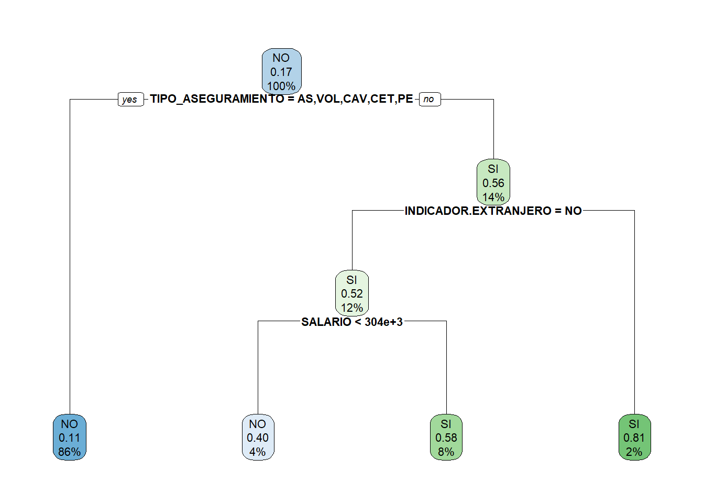
Primero este tipo de árboles se leen de arriba hacia abajo y lo que trata de hacer es predecir quién es moroso usando diferentes variables del dataset que se está usando. Sin embargo, no todas las variables resultan ser de importancia, por lo que no todas se verán aquí, solo aquellas que resultaron tener un impacto en la morosidad de una persona. En este caso las ramas las cuales son de importancia para determinar la morosidad de una persona es el tipo de aseguramiento, si son extranjeros o no y el salario que percibe cada persona.
En el nodo raíz que son los primers números que aparecen dice que la mayoria del dataset no es moroso y que solo representa 17 puntos porcentuales de las 5000 observaciones que se encuentran. Después esto baja a la rama de tipo de aseguramientos donde las personas asalariadas, de seguro voluntarios, pensionados en su propio sistema, entre otros, expresa que un 11% de las personas son morosas, donde todas las personas que tienen estos tipos de seguros representan un 86% de la base de datos, mientras que las personas que llegan al otro nodo un 56% son morosas y lo cual si es una cantidad mucho mayor y este describe un 14% de la cantidad de entradas de la base de datos.
Ahora siguiendo la ruta de los que si son morosos dentro del grupo de los tipos de aseguramientos se tiene las personas que son extranjeras o no. En el caso de que sean extranjeros se observa que un 81% de las veces son morosas, sin embargo no son un grupo con una cantidad muy representativa dentro del dataset, pues estos solo representan un 2% de todas las entradas, mientras que si no son extranjeros presentan un 52% de personas que son morosas que llegan a este grupo y expresa un 12% de las entradas totales del dataset, el cual ya puede ser una cantidad un poco más significativa y a la cual se le debería poner atención.
El grupo que no son extranjeros y morosos se dividen en la rama de salarios donde nos dicen que hay que analizar las personas que tienen un salario menor o mayor a 304k. En el caso de que este sea menor a 304k nos dicen que un 40% de las personas no son morosas, lo cual nos da que un 60% de este grupo son morosos, este representa un 4% del dataset, entonces se puede intuir que no es un porcentaje realmente alto. Ahora los salarios mayores a 304k nos dice que un 58% son morosos lo cual sigue siendo un porcentaje alto apesar de tener más salario y estos describen un 8% de todas las entradas del dataset.
Con esto se puede concluir que las personas asalariadas tienen tasas de morosidad bajas menores al 10%, por lo que tener salario indica que no son morosos, lo cual concuerda con lo que se analizó anteriormente, donde mayor salario involucra menor riesgo y más estabilidad. También, ser extranjero es un factor fuerte, aunque sea un grupo pequeño estos tienen un 81% de morosidad, lo cual es una probabilidad muy alta y debería de manejarse de las maneras correctas y ,por último, se puede concluir que la gran mayoría del datset no es morosa, especialmente aquellas personas que son asalariadas o tienen seguros voluntarios.